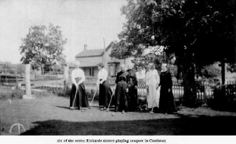

Richards Photographs
![[floral bar]](../../../graphics/3bar.gif)

This page is for our photographs of our Richards family. We have quite a few of our immediate ancestors, but are eager to have more pictures of more distant Richards relatives.
The background to this page is drawn from detail of a carpet made in the Richards sisters' carpet factory a century ago, and still in usable condition.
Armstrong, Sarah, 1855-1933
Bannister, Tracy
Bevin, Peter Courtney Frank (Pete)
Clinton, Andrew McKenzie (Andy)
Clinton, Bailey Alyssa
Clinton, Edward
Clinton, Lauren Elizabeth
Clinton, Michael Edward (Mike)
Clinton, Norah Elizabeth (McKenzie)
Clinton, Stephanie Anne
Clinton, Timothy David (Tim)
Clinton, Tracy (Bannister Coulthard)
Clinton, Virginia Erin
Cockburn, Edith Kathleen (Perry), 1901-1995
Coulthard, Dylan Jeremy
Coulthard, Tracy (Bannister)
Diminie, Chantel Skye
Diminie, Megan Anne
Diminie, Natalie Rose
Diminie, Stuart Todd
Diminie, Todd
Diminie, Whitney Anne (Lake)
Guivernau, Xenia
Henderson, Pamela Mary
Johnston, Gertrude Maude (Perry), born 1884
Lake, Courtney Janet
Lake, Darcy Malcolm
Lake, James Russell (Russell)
Lake, Janet Ruth (McKenzie)
Lake, John Russell
Lake, Pamela Mary (Henderson)
Lake, Rachel Beryl
Lake, Raven McKenzie
Lake, Whitney Anne
Lake, Xenia (Guiverneau)
McCrea, Margaret, ca 1858-1897 (Maggie)
McElhanney, Helen
McElhanney, Louisa Davis (Perry), born 1886 (Lulu)
McDonald, Clara Kathleen (Richards)
McDonald, Dennis Richards
McDonald, Elwood A.
McDonald, Martha Lynn
McKague, Carla Anne
McKague, Eric Richards (Rick)
McKague, Margaret Lillian (Richards), 1913-1985
McKague, Margaret Linda (Linda)
McKague, Michelle Elizabeth
McKague, Robert Eric (Eric)
McKenzie, Andrew Roland
McKenzie, Edith Ruth (Richards)
McKenzie, James Roland (Jamie)
McKenzie, Janet Ruth
McKenzie, Martha Lynn (McDonald)
McKenzie, Matthew James
McKenzie, Norah Elizabeth
McKenzie, Roland
Moran, Andrew Réné James
Moran, Erica Sebastienne (van Will) (Sebastienne)
Moran, Sean Sebastian James
Parthun, Felice Roseanne Janet
Perry, Doris Enid, born 1897
Perry, Edith Kathleen, 1901-1995
Perry, Emily Maude (Richards), 1858-1939 (Maude)
Perry, Gertrude Maude, born 1884
Perry, Jessie Mildred, born 1890
Perry, Louisa Davis, born 1886 (Lulu)
Pettibone, Wilhelmina (Richards), 1848-1937
Phinn, Alice (Richards), 1838-1908
Pomeroy, Lucretia (Richards), 1835-1924
Richards, Alice, 1838-1908
Richards, Clara Jessie (Wilson), ca 1886-1938
Richards, Clara Kathleen
Richards, Doris Helen, 1919-1972
Richards, Drusilla, ca 1844-1909
Richards, Edith Ruth
Richards, Eliza Ann, ca 1837-1916
Richards, Emily Maude,1858-1939
Richards, James Nelson, 1886-1926 (Jim)
Richards, John Bibby, 1846-1890
Richards, Lillian, ca 1883-1947 (Lil)
Richards, Lucretia, 1835-1924
Richards, Margaret (McCrea), ca 1858-1897 (Maggie)
Richards, Margaret Ellen, 1840-1917
Richards, Margaret Lillian, 1913-1985
Richards, Mary Edith, ca 1894-1908
Richards, Mary Rebecca, 1850-1931
Richards, Maude,1858-1939
Richards, Nicholas Dennis, ca 1852-1918
Richards, Sarah (Armstrong), 1855-1933
Richards, Wilhelmina, 1848-1937
Richmond, Brad William
Richmond, Graeme Donald Wolfe
Richmond, Paul Stanley Wolfe
Siple, Doris Helen (Richards), 1919-1972
Spagnolo, Eric
Spagnolo, Lauren Elizabeth (Clinton)
Thompson, Donald A.
Thompson, Helen (McElhanney)
Tuer, Adam Gordon
Tuer, Bethany Anne
Tuer, David William
Tuer, Gordon
Tuer, Stephanie Anne (Clinton)
van Will, Erica Sebastienne (Sebastienne)
van Will, Margaret Linda (Linda)
van Will, Sebastianus Jozef Egidius (Van, Gidi)
White, Bertha Luella, 1892-1950
Wilson, Bertha Luella (White), 1892-1950
Wilson, Clara Jessie, ca 1886-1937
Wilson, Lillian May, 1870-1930 (Lil)
Wilson, Thomas Franklin, 1881-1954 (Frank)
Wolfe, Benjamin Louis (Ben)
Wolfe, Carla Anne (McKague)
Wolfe, Jennifer Anne (Jen)
Wolfe, Menya Ruth, 1964-2001
Wolfe, Morris
Wolfe-Parthun, Emma Mary Laurel
Wolfe-Parthun, Hannah Margaret Rose
Wolfe-Parthun, Noah Raymond Morris
![[link to family album]](../../../graphics/familyalbum.GIF) Back to Family Album page
Back to Family Album page
mckague.com Search our Site Our Genealogy Page Our Photographs Links Pure Gold Guestbook Credits